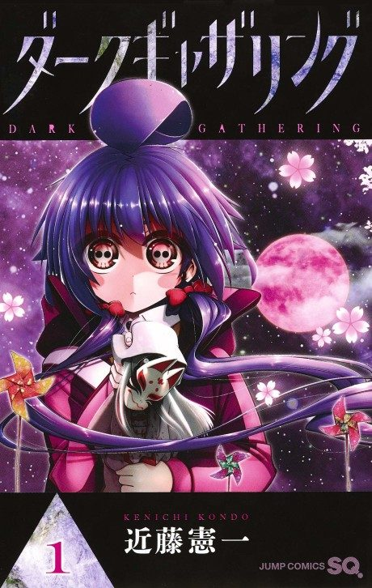

Anime
Anime
Manga2023 · Adventure, Horror, Supernatural
Dark Gathering
ダークギャザリング
AniList7.5
Animeter—
Episodes25 ep
MangaCh. 36
Is it worth pushing through?
Built from what visitors report across all 25 episodes.
Loading reports…Checking what other people said about this one.
Sign in with your email at the top of the page to add your report.